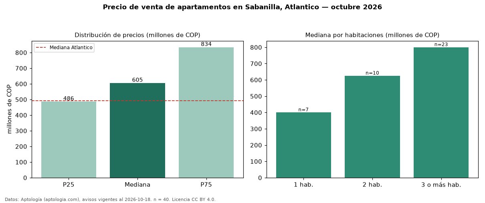

Precio de venta de apartamentos en Sabanilla, Atlantico — octubre 2026
Con 40 avisos vigentes, el precio mediano de apartamentos en venta en Sabanilla, Atlantico es COP 605 millones. Eso es 23 % por encima de la mediana de Atlantico para apartamentos (COP 492 millones). Por metro cuadrado, la mediana es COP 5,93 millones/m² (n = 40 avisos con área), 11 % por encima de Atlantico (COP 5,34 millones/m²). El área mediana anunciada es 110 m². El segmento con más oferta es el de 3 o más habitaciones (23 avisos, mediana COP 800 millones); pasar de 1 habitación a 3 o más habitaciones cambia la mediana +100 %. La administración mediana declarada es COP 947.000 al mes (n = 31). El estrato más frecuente es 5 (51 % de los avisos con estrato). La mitad central de los avisos va de COP 486 millones a COP 834 millones (razón 1,7), una dispersión moderada. Datos: Aptología (aptologia.com), CC BY 4.0 — https://www.aptologia.com/venta/atlantico/sabanilla. Archivos: PDF, CSV con las cifras y gráfica PNG.

| Avisos únicos | 40 |
|---|---|
| Percentil 25 | COP 486.250.000 |
| Mediana | COP 605.000.000 |
| Percentil 75 | COP 833.750.000 |
| Mediana por m² | COP 5.930.306 |
Fuente: avisos vigentes de portales inmobiliarios recopilados por Aptología, deduplicados (mínimo 30 avisos únicos por celda). Precios pedidos, no cerrados. Fecha: 2026-10-18.